«Доехали сюда мы только вчера»
«Ехал я до своего учебного подразделения в общей сложности 20 дней. Учёба начнётся с 1 декабря и будет длиться 6 месяцев. Служба начинается вроде неплохо…»
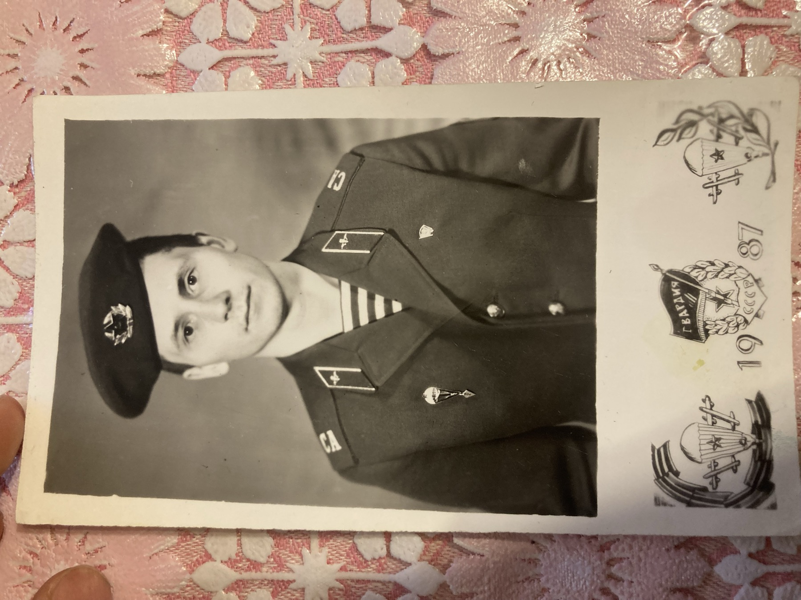
Юрий Олегович Рочев родился на Печоре, в селе Окунёво Коми АССР. Он писал домой из Ферганы — маме, сестре, брату. Письма сохранились. Это его история — рассказанная ими.
В селе Окунёво Усть-Цилемского района, на нижней Печоре, у Олега Фёдоровича и Анны Павловны Рочевых родился сын Юрий. Семья — коми, и свидетельство о рождении заполнено на двух языках: «Чужöм йылысь свидетельство» — писано от руки, фиолетовыми чернилами.
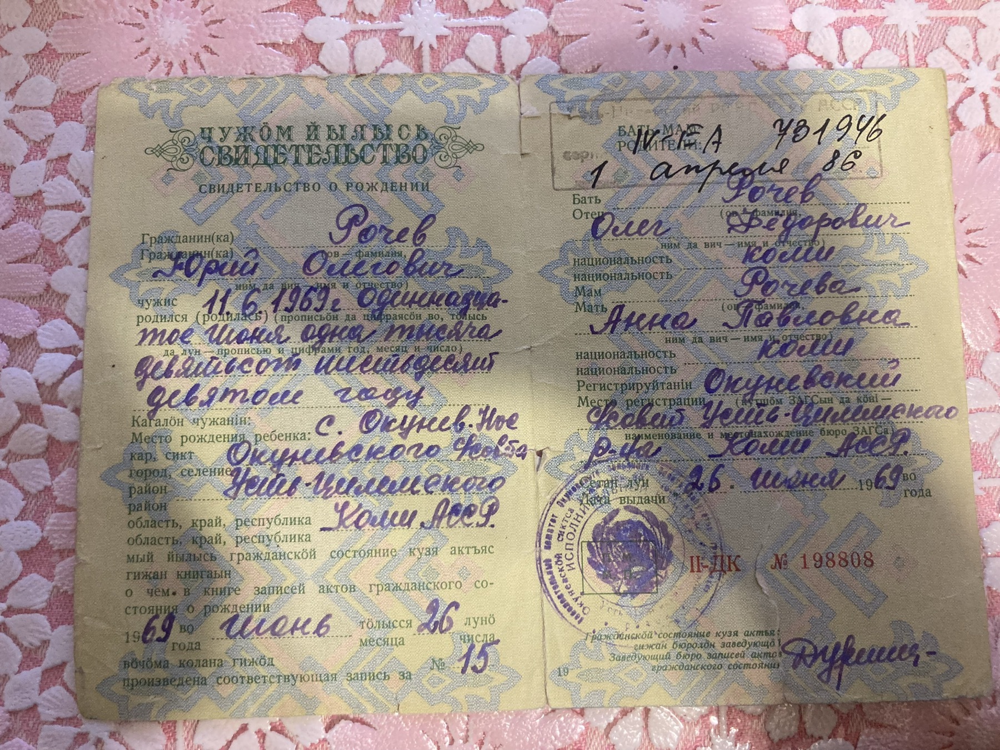
С 1976 по 1986 год Юра учился в Новоборской средней школе имени С. М. Черепанова. На выпускной ему подарили самодельный альбом — деревянные дощечки на медных колечках, с выжженной розой и фотографией школы. На дощечке — напутствие:
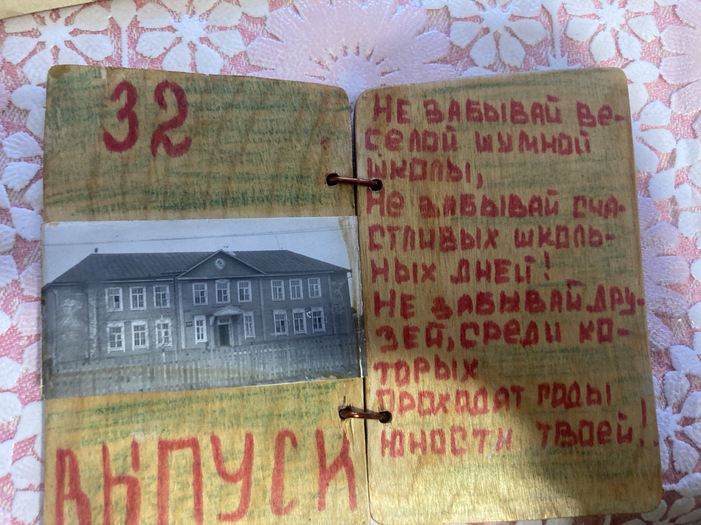
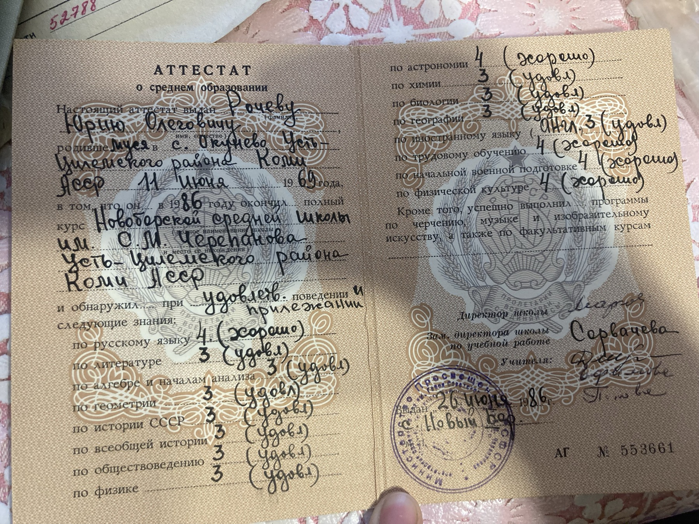
В апреле 1984-го, восьмиклассником, Юра вступил в ДОСААФ. При школе окончил курсы механизаторов — и 17 июня 1986 года, сразу после выпускного, получил удостоверение механизатора сельского хозяйства: тракторист, допущен к работе на ДТ-75 и МТЗ.
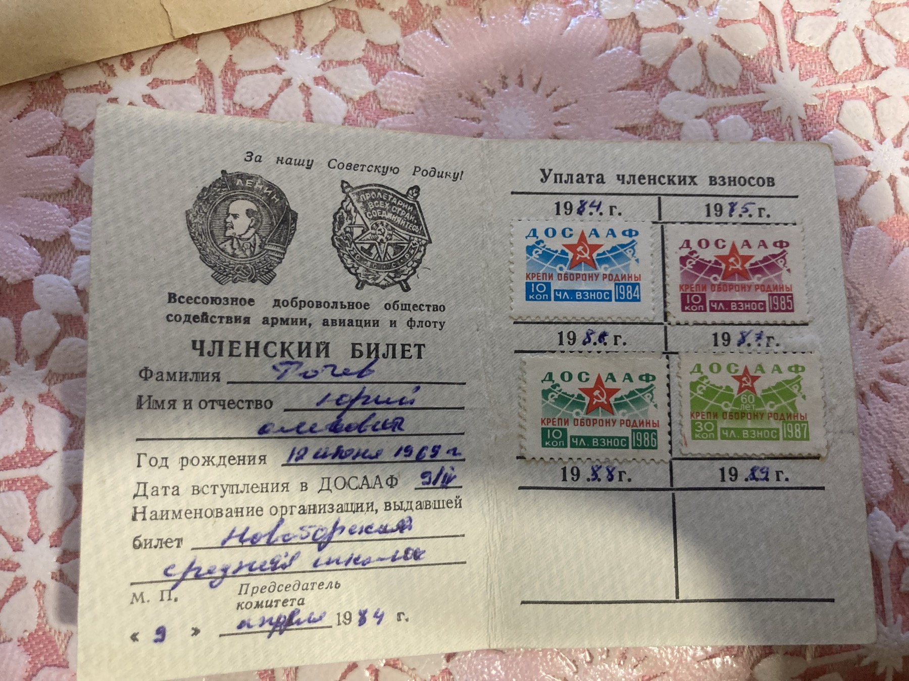
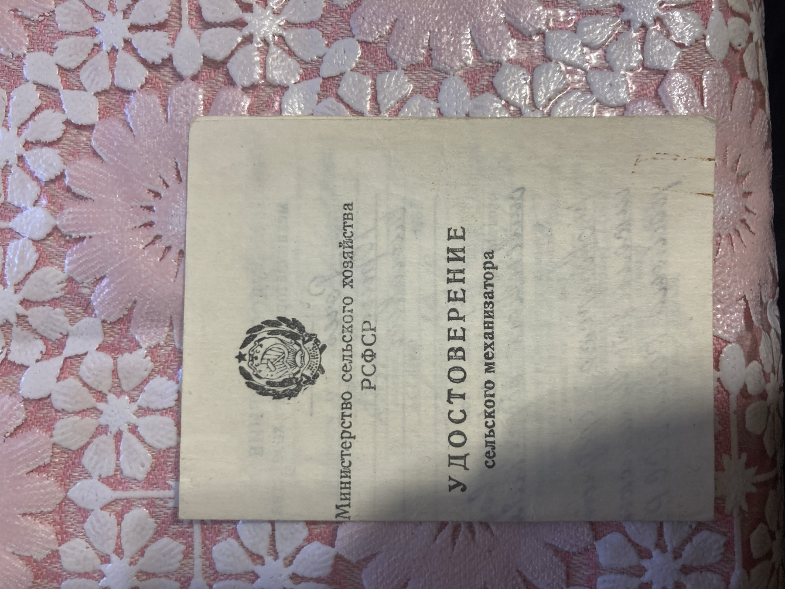
Осенью 1986-го Юра уехал в Ухту — за 500 с лишним километров от дома — и поступил в СПТУ-30 на улице Советской. Восемь месяцев учёбы: 4 мая 1987 года он окончил училище водителем категории «С» и автослесарем 3-го разряда, а в конце мая сдал экзамены в ГАИ и получил права.
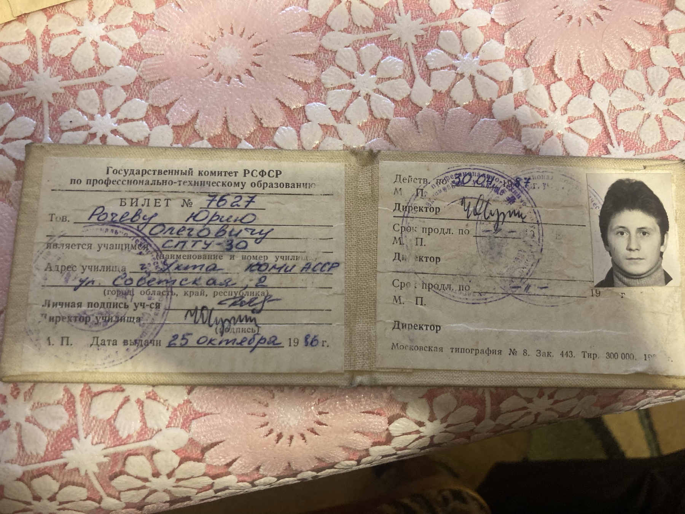
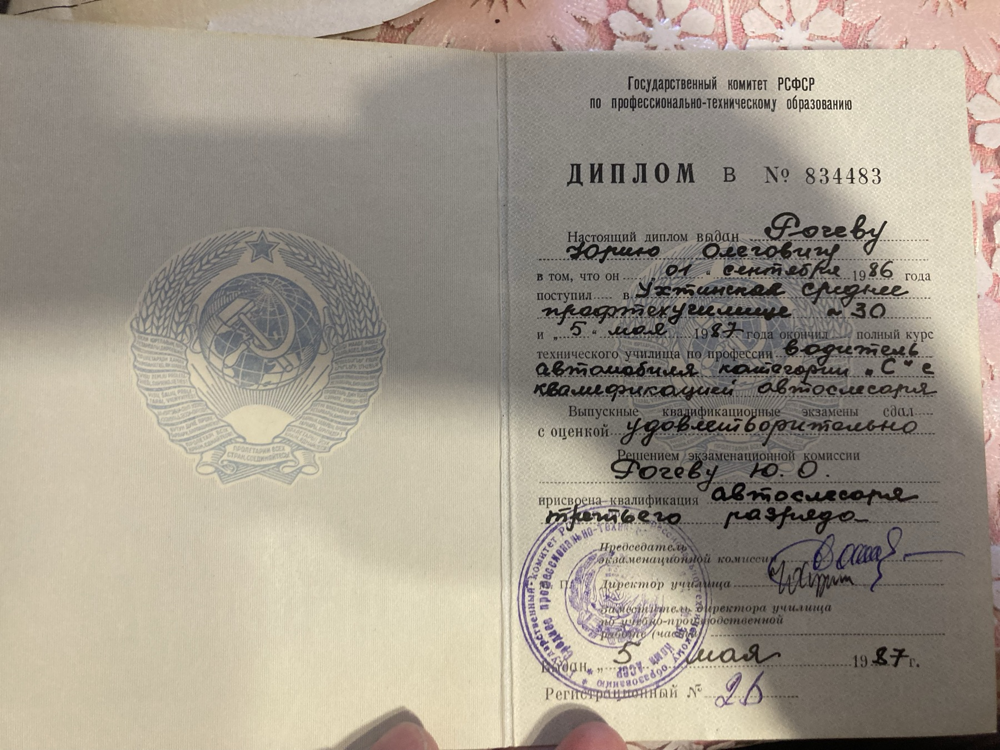
Юра вернулся домой и 22 июня 1987 года устроился плотником-бетонщиком 2-го разряда в Усть-Цилемский мехучасток «Комиагропромстроя». В его трудовой книжке всего две записи. Вторая, от 16 октября: «Уволен в связи с призывом в ряды Советской Армии».
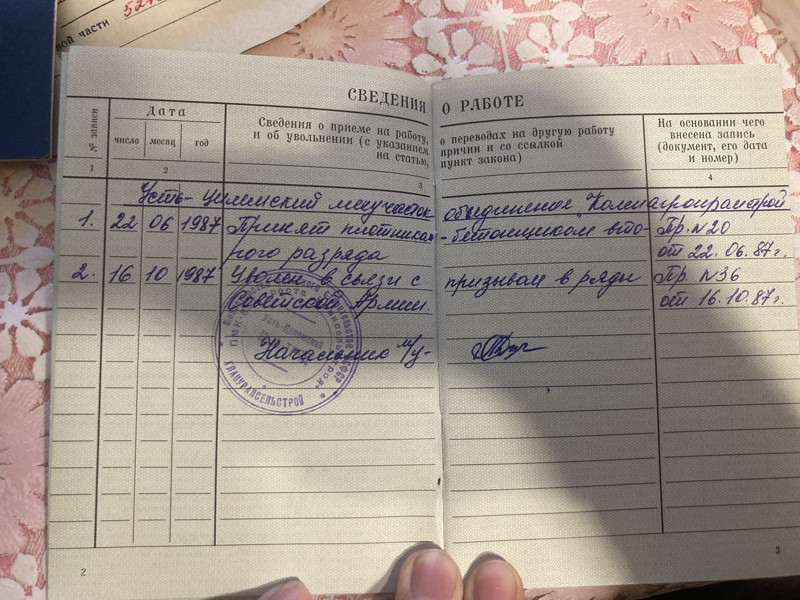
Среди бумаг сохранился листок, на котором Анна Павловна — мама — вела свой короткий дневник той осени. Три строчки:
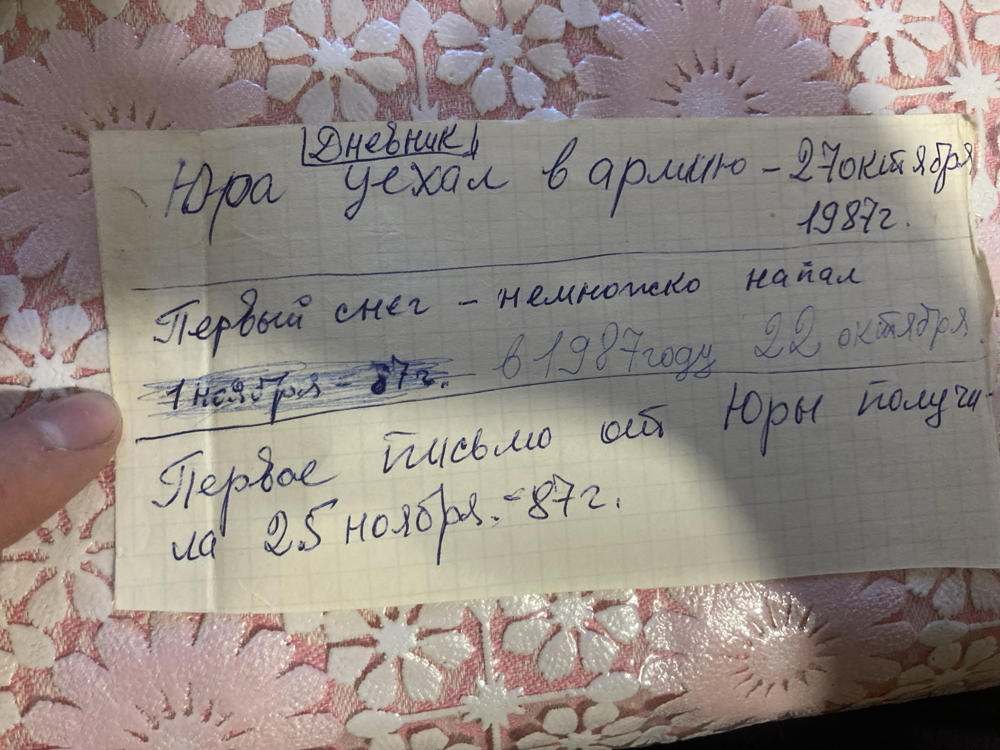
28 октября Юрия призвали в ВС СССР. Команду везли через Свердловск — там десять дней шёл сбор «со всего Союза, и это всё парашютисты». До учебного полка ВДВ в Фергане он добирался в общей сложности двадцать дней — почти три тысячи километров от дома.
Фергана, Узбекская ССР. Войсковая часть 52788 «Б» — учебный парашютно-десантный полк ВДВ. Здесь готовили десантников для всех воздушно-десантных войск страны.
Шесть месяцев учебки: строевая, прыжки, марши, жара впереди. Обо всём этом — короткие, спокойные письма. Каждое начинается одинаково: «Привет из Ферганы!» — и почти каждое успокаивает: «не переживайте, у меня всё нормально». Нажмите на письмо, чтобы прочитать его целиком.
«Ехал я до своего учебного подразделения в общей сложности 20 дней. Учёба начнётся с 1 декабря и будет длиться 6 месяцев. Служба начинается вроде неплохо…»
«Готовимся к прыжкам. 23 декабря будут первые прыжки, а остальные — к остальное всё нормально… Всем солдатский привет!»
Под Новый год Юра прислал домой фотографию — голубой берет, тельняшка, значок парашютиста-отличника. На обороте — подпись родным, а в конверте записка:
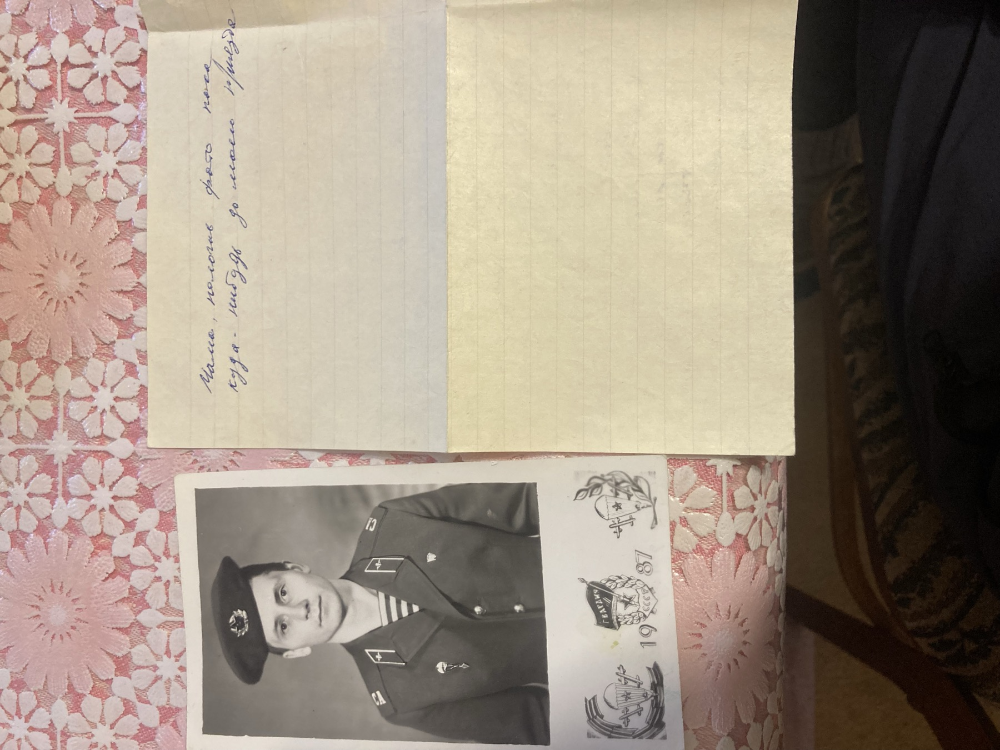
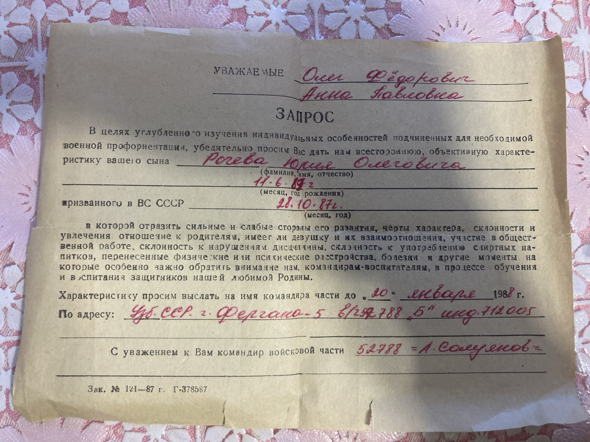
«Здесь фото плохо держать — пропадают… У меня всё хорошо. Служба идёт. Здоровьем не жалуюсь. Кормят хорошо. Так что не переживайте».
«Жив-здоров, чего и вам желаю… Вчера был последний прыжок с Ан-12. Сейчас начнётся вождение… Короче, посылаю фото — ещё 14 штук».
«Сейчас у нас начались марши. Вчера прошли „сотку“. 25 февраля будет 150-км марш… Как дышится вам, северяне? Мороз, наверно, под 40°? В шубах ходите?»
«Спасибо — получил вашу посылку, фото и открытку к 23 февраля… 19/II был 100-км марш. Скоро — 150 км. Потом — не знаю куда. Наверно — за кордон. Потому что ВДВ…»
До конца учебки оставалось около двух месяцев. Письма ждали дома, готовили конверты «по одному», как он просил.
16 марта 1988 года Юры не стало. Ему было восемнадцать лет. О том, что случилось в Фергане, семейный архив молчит — в нём остались только документы. На следующий день из Окунёва в Москву, брату Ивану, ушла телеграмма:
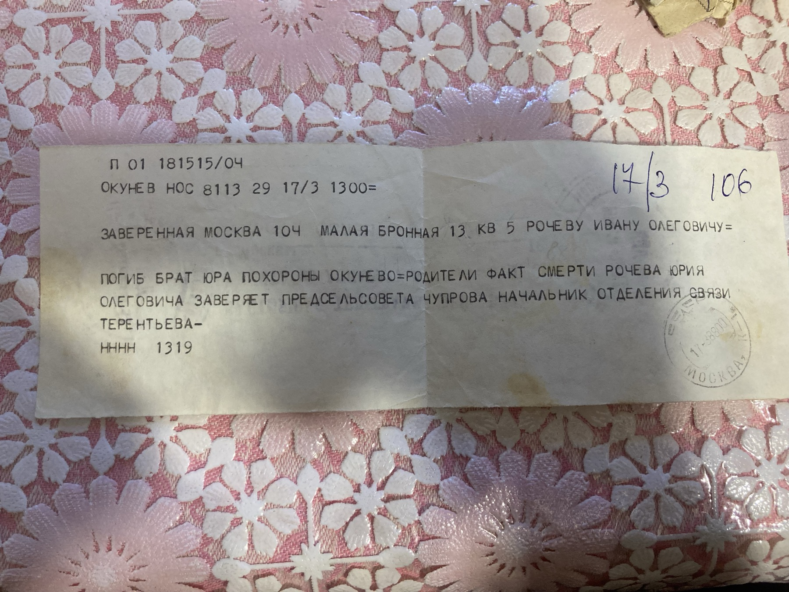
Юру похоронили в Окунёве — в родном селе, на берегу Печоры, куда он собирался вернуться и «во всём разобраться».
Письма, конверты с крокусами и скопой, деревянный школьный альбом, права, трудовая с двумя записями, фотография в голубом берете. Всё это бережно хранится в семье. Ниже — весь архив: нажмите на любой снимок, чтобы рассмотреть.